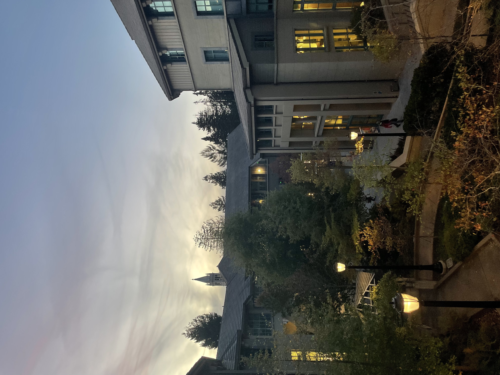
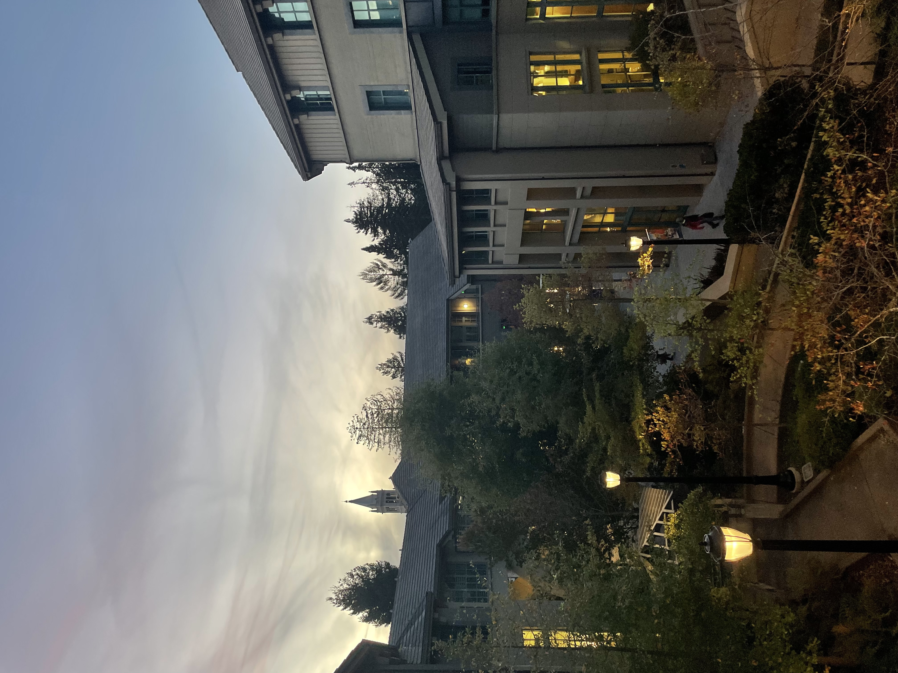

To warp images we need to find 3x3 matrix H with 8 degrees of freedom. For each corresponding pair of points (x,y) and (x', y'), we can represent them in homogeneous coordinates and get the following:
To recover the homography, we need at least four corresponding points between the two images. Each correspondence provides two equations, and with four correspondences, we get a system of 8 equations—sufficient to solve for the 8 unknowns in H. However, because such a system is sensitive to noise, using more than four correspondences is recommended. This creates an overdetermined system that can be solved with least-squares.
With the homography matrix H recovered, we can now warp an image to align it with a reference image. This is achieved using inverse warping, which ensures that every pixel in the output image receives a valid value by mapping its position back to the input image.
Image rectification is a process that uses a homography to adjust an image such that a selected object appears rectangular, correcting for perspective distortion. This is particularly useful for scenes containing paintings, posters, or tiles, where known geometric shapes can serve as reference objects.
To perform rectification, we use a single input image and define correspondences between points in the image and a desired rectangular shape. For example, if the photo contains a poster, you can manually select its four corners using a mouse-click interface and store their coordinates. Next, you define the corresponding points as the corners of a square
To create the panorama from multiple images, the following procedure was followed:
The size of the output mosaic was determined by transforming the corners of both input images using the computed homography. This allowed to predict the bounding box that would contain both images. A translation matrix was applied to ensure both images fit into the shared coordinate space of the output canvas.
This approach ensures that each pixel in the output canvas receives a value by mapping back to the original images, avoiding holes and gaps. The images were warped using: warpImage() function from the previous part.
To hide the seam i applied blending. I used laplacian stack that I implemented in project two. I got the best results when using 3 levels laplacian stack.
Even though my approach is not ideal as there are some artifacts at thebottom of the image. In general I am satisfied with the result. Here are some more examples.
 
